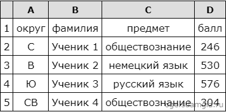
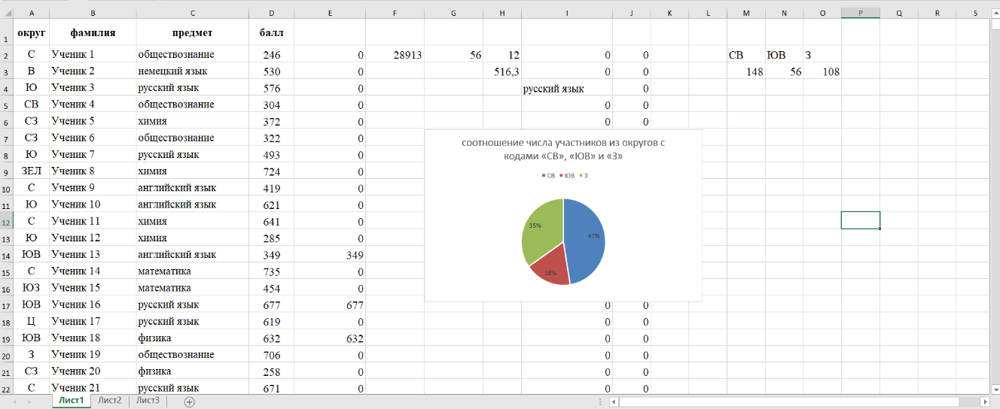

Задание 14. Умение проводить обработку большого массива данных с использованием средств электронной таблицы
В электронную таблицу занесли данные о тестировании учеников. Ниже приведены первые пять строк таблицы:
В столбце А записан округ, в котором учится ученик; в столбце В — фамилия; в столбце С — любимый предмет; в столбце D — тестовый балл. Всего в электронную таблицу были занесены данные по 1000 ученикам.
Выполните задание.
Откройте файл с данной электронной таблицей (расположение файла Вам сообщат организаторы экзамена). На основании данных, содержащихся в этой таблице, ответьте на два вопроса.1. Сколько учеников в Южном округе (Ю) выбрали в качестве любимого предмета английский язык? Ответ на этот вопрос запишите в ячейку Н2 таблицы.
2. Каков средний тестовый балл у учеников Юго-Восточного округа (ЮВ)? Ответ на этот вопрос запишите в ячейку Н3 таблицы с точностью не менее двух знаков после запятой.
3. Постройте круговую диаграмму, отображающую соотношение числа участников из округов с кодами «CВ», «ЮВ» и «З». Левый верхний угол диаграммы разместите вблизи ячейки G6.
Решение

1. Запишем в ячейку I2 следующую формулу =ЕСЛИ(A2="Ю";C2;0) и скопируем ее в диапазон H3:H1001. В таком случае, в ячейку столбца Н будет записываться название предмета, если ученик из Южного округа и «0», если это не так. Применив операцию =ЕСЛИ(I2="английский язык";1;0), получим столбец(J) с единицами и нулями.
Далее, используем операцию =СУММ(J2:J1001). Получим количество учеников, которые считают своим любимым предметом английский язык. Таких 12 человек.
2. Для ответа на второй вопрос используем операцию «ЕСЛИ». Запишем в ячейку E2 следующее выражение: =ЕСЛИ(A2="ЮВ";D2;0), в результате применения данной операции к диапазону ячеек Е2:Е1001, получим столбец, в котором записаны баллы только учеников из Юго-Восточного округа.
Сложив значения в ячейках, получим сумму баллов учеников: 28 913. Найдём количество учеников из Юго-Восточного округа с помощью команды =СЧЁТЕСЛИ(A2:A1001;"ЮВ"), получим 56. Разделив сумму баллов на количество учеников, получим: 516,30 — искомый средний балл.
3. В ячейку L2 вставим формулу =СЧЁТЕСЛИ(A2:A1001; "СВ"), в ячейку L3 вставим формулу =СЧЁТЕСЛИ(A2:A1001; "ЮВ"), в ячейку L4 вставим формулу =СЧЁТЕСЛИ(A2:A1001; "З"). Теперь построим по полученным значениям круговую диаграмму, подпишем сектора.
Ответ: 1) 12; 2) 516,30.